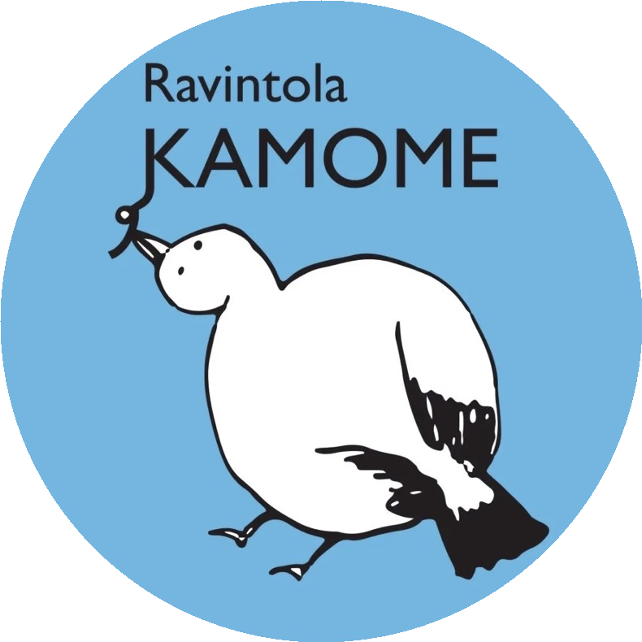
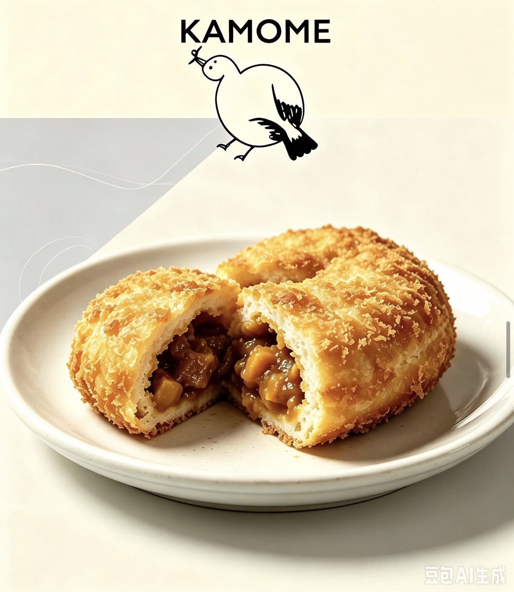
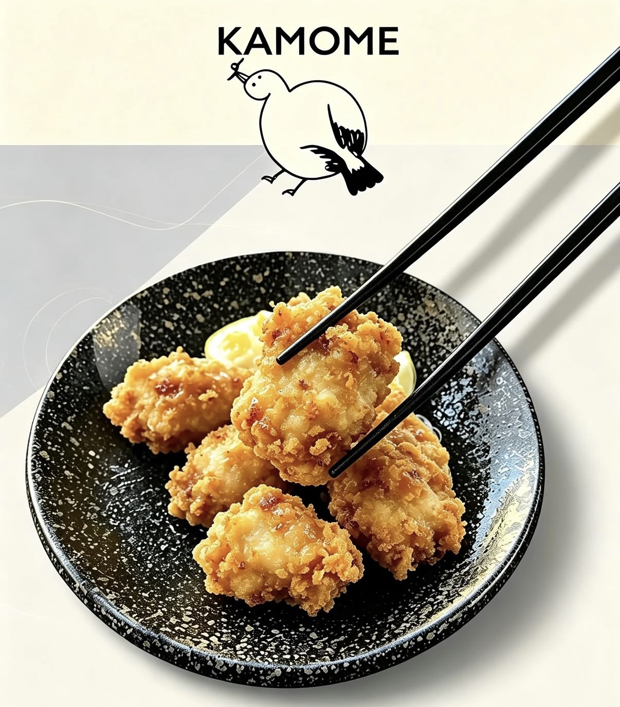
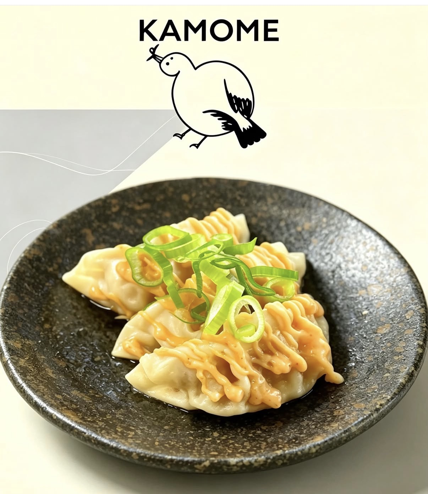

Galleria
Tunnelmia Kamomesta


Aitoa japanilaista kotiruokaa, lämmintä ramenia, rapeaa tonkatsua sekä tuoreita leivonnaisia Helsingissä. Tervetuloa nauttimaan konstailemattomista mauista ja levollisesta tunnelmasta.
100%
Japanilainen maku
Fresh
Päivittäin tehty
00520
Helsinki

Ravintola Kamome yhdistää puhtaat suomalaiset raaka-aineet – kuten tuoreen lohen ja sesongin vihannekset – perinteisiin japanilaisiin makuihin, aitoon dashi-liemeen ja valmistustapoihin.
Paistettua lohta teriyakilla, käsin puristettuja onigireja ja huolella maustettuja lisukkeita.
Hitaasti valmistettu dashi- ja ramen-liemi, täyteläinen miso sekä käsintehdyt gyoza-nyytit.
Pehmeät uunituoreet kanelipullat ja aito japanilainen Uji-alueen seremoniallinen vihreä tee.
Ravintolan vieressä palvelevasta Kamome-keittiövaunusta ja ravintolasta saatavat asiakkaidemme kestosuosikit!

Nicely flaky & crispy outside, filled with rich curry inside. Come try our popular curry bread!

Tender & juicy Japanese-style fried chicken karaage. Choose between spicy mayo or wasabi mayo sauce. Perfect as a tasty side dish!

Soft, chewy gyoza dumplings topped with our house-made spicy mayo sauce. One of our customer favourites!
Lähetä varauspyyntösi alla olevalla lomakkeella. Vahvistamme varauksen sähköpostitse.